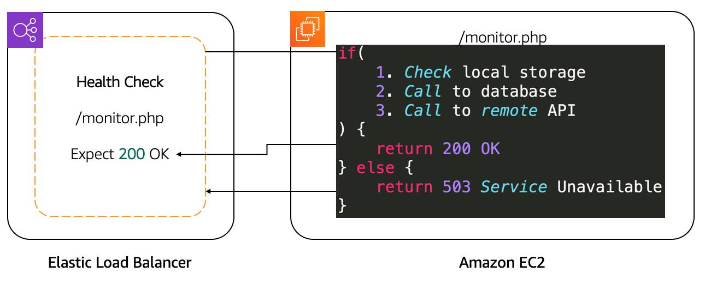
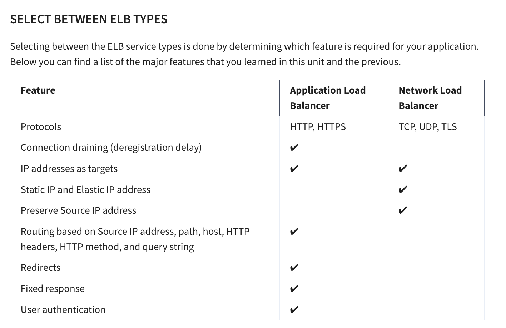

flowchart TD
client((Client))
alb[Application Load Balancer]
tg[Target Group]
subgraph AZ1[AZ1]
s1[Server 1]
end
subgraph AZ2[AZ2]
s2[Server 2]
s3[Server 3]
end
hc{{Health checks}}
s1bad((Server 1<br>unhealthy))
client -->|HTTP/HTTPS| alb
alb -->|forwards| tg
tg -->|"If server1 healthy"| s1
%% tg --> s2
%% tg --> s3
alb -.->|periodic| hc
hc -.-> s1
hc -.-> s2
hc -.-> s3
s1 -.->|fails checks| s1bad
tg ==>|if s1 unhealthy| s2
tg ==>|if s1 unhealthy| s3
08. Optimization
8. Optimization in AWS
8.1 Notation in Nines:

8.2 Automatically use a Second Server in a different availability zone
8.3 Types of High Availability Architecture

- Active-active clusters rely on a dedicated load balancer for routing or distributing traffic across all participating nodes.
- The manner by which a load balancer distributes traffic depends on the specific load balancing algorithm used.
- For instance, some load balancers distribute traffic using Round-Robin, Weighted Round Robin or Random algorithm.

- Active-passive setups are common in disaster recovery (DR) strategies.
- In some DR strategies, the passive node is set up in a separate geographical location and
- then brought into play once the active node becomes incapacitated
Source for the images and above content: An article on High Availability Architectures
flowchart TD HA[high_availability<br> architectures] AP[active_passive] AA[active_active] P1((for Stateful<br>Applications)) P2((for Stateless<br>Applications)) HA --> AP HA --> AA AP --> P1 AA --> P2
8.4 Route Traffic with Amazon Elastic Load Balancing
8.4.1 What is a Load Balancer:
Load balancing (bare minimum)
- Goal: Spread incoming application requests across multiple backend servers (EC2 instances) so no single server gets overloaded.
- A load balancer sits in front of the servers, receives all client traffic, and forwards each request to a backend server using a routing algorithm (commonly round-robin, which cycles through servers).
- Request path: Client browser → load balancer → one EC2 application server → response returns via the load balancer back to the client.
- You can run your own load balancer software on EC2, but AWS provides a managed service called Elastic Load Balancing (ELB) for this purpose.
8.4.2 FEATURES OF ELB
- Managed service: ELB is a fully managed load balancing service, so you don’t have to run/operate your own load balancer fleet. [repost.aws]
- Many target types: It can distribute traffic to EC2 instances, containers, IP addresses, and Lambda functions (depending on LB type). [aws.amazon.com], [docs.aws.amazon.com]
- Hybrid capable via IP targets: Because ELB can target IP addresses, you can load balance across AWS + on‑prem resources (for example over VPN/Direct Connect). [aws.amazon.com], [aws.amazon.com]
- Highly available: Deploy/enable the load balancer across multiple Availability Zones (ALB requires at least two) so it can keep routing to healthy targets if an AZ has issues. [docs.aws.amazon.com], [aws.github.io]
- Elastic scaling: ELB automatically scales its capacity based on changes in incoming traffic. [docs.aws.amazon.com], [aws.amazon.com]
8.4.3 HEALTH CHECKS
- Health checks should validate real application health, not just “port is open” or “homepage loads”; shallow checks can pass even when the app is broken. [aws.github.io]
- A good pattern is a deep health endpoint (example:
/monitor) that verifies critical dependencies (for example DB connectivity and an S3 call) and returns failure if any dependency fails. [aws.github.io] - Point the load balancer’s health check path to that endpoint so the load balancer can decide whether a target should receive traffic. [docs.aws.amazon.com]

- New instances start receiving traffic only after they pass the load balancer health checks; load balancer routes traffic only to healthy targets (with specific edge cases if all are unhealthy). [docs.aws.amazon.com], [docs.aws.amazon.com]
- If the load balancer determines an instance is unhealthy, traffic is stopped to that instance, and EC2 Auto Scaling can replace unhealthy instances when it receives an unhealthy notification (ELB is one of the supported notification sources). [docs.aws.amazon.com], [docs.aws.amazon.com]
- During scale-in (instance termination), connection draining / deregistration delay allows the load balancer to stop new connections to the instance while letting in-flight requests complete before termination, reducing dropped requests. [docs.aws.amazon.com], [docs.aws.amazon.com]
8.4.4 ELB COMPONENTS

- Listeners: The client connects to the listener. This is often referred to as client-side. To define a listener, a port must be provided as well as the protocol, depending on the load balancer type. There can be many listeners for a single load balancer.
- Target groups: The backend servers, or server-side, is defined in one or more target groups. This is where you define the type of backend you want to direct traffic to, such as EC2 Instances, AWS Lambda functions, or IP addresses. Also, a health check needs to be defined for each target group.
- Rules: To associate a target group to a listener, a rule must be used. Rules are made up of a condition that can be the source IP address of the client and a condition to decide which target group to send the traffic to.
8.5 APPLICATION LOAD BALANCER
- Granular routing: Routes traffic based on HTTP request data (URL path, host, headers, method, source IP).
- Direct responses: Can send fixed responses (e.g., HTML) or redirects (e.g., HTTP → HTTPS).
- TLS offloading: Handles HTTPS traffic with SSL certificates from IAM or AWS Certificate Manager (ACM).
- User authentication: Supports OpenID Connect and integrates with SAML, LDAP, Microsoft AD, etc.
- Traffic security: Uses security groups to restrict allowed IP ranges.
- Round-robin routing: Distributes requests evenly across servers.
- Least outstanding requests routing: Balances load by sending new requests to servers with fewer pending requests.
- Sticky sessions: Uses HTTP cookies to keep traffic from a client directed to the same backend server.
- Protocol scope: Supports HTTP and HTTPS only; use Network Load Balancer (NLB) for other protocols.
8.6 NLB
- Protocol support: Works with TCP, UDP, and TLS. Operates at the connection layer, so it does not understand HTTP/HTTPS.
- Flow hash routing: Routes traffic based on protocol, source/destination IP and port, and TCP sequence number.
- Sticky sessions: Based on the client’s source IP address (not cookies like ALB).
- TLS offloading: Can terminate TLS to reduce backend server load.
- High performance: Instantly handles millions of requests per second (no warm-up needed).
- Static and Elastic IPs: Supports direct client connections via fixed IP addresses—useful for DNS-restricted or firewall-rule scenarios.
- Source IP preservation: Passes the client’s real IP address to the backend (unlike ALB, which shows the LB’s IP).

8.7 Intro to Amazon EC2 Auto Scaling
Availability and reachability is improved by adding one more server. However, the entire system can again become unavailable if there is a capacity issue. Let’s look at that load issue with both types of systems we discussed, active-passive and active-active.
8.7.1 Vertical Scaling
Active-Passive vs Active-Active Systems in Scaling
When too many requests are sent to a single active-passive system, the active server becomes unavailable and (hopefully) fails over to the passive server.
But this doesn’t really solve the problem.
Why Active-Passive Needs Vertical Scaling
- Active-Passive systems rely on vertical scaling (increasing server size).
- With EC2 instances, this means:
- Choosing a larger instance type
- Or switching to a different type
- Limitation: Scaling can only be done when the instance is stopped.
Steps for Vertical Scaling in Active-Passive
- Stop the passive instance (safe, since it’s not receiving traffic).
- Change the instance size or type, then start it again.
- Shift traffic to the passive instance (making it active).
- Stop, resize, and start the previous active instance (so both match).
Drawbacks of Active-Passive Scaling
- Manual and repetitive work each time traffic changes.
- A server can only scale vertically up to a limit.
- Once the limit is reached, the only option is to:
- Create another active-passive system
- Split requests and functionalities across them
- (Often requires massive application rewriting)
Active-Active Advantage
- With active-active systems, scaling is horizontal.
- Instead of making servers bigger, you simply add more servers.
- This approach is easier, more flexible, and avoids rewriting applications.
8.7.2 Horizontal Scaling
- Active-active system works well because the application is stateless (no client sessions stored on the server).
- Scaling from 2 → 4 servers requires no code changes.
- Just add or remove instances as needed.
- Scaling from 2 → 4 servers requires no code changes.
- Amazon EC2 Auto Scaling handles this automatically:
- Creates new EC2 instances when traffic increases.
- Terminates instances when traffic decreases.
- Creates new EC2 instances when traffic increases.
- Key advantage:
- Active-active + stateless apps = true scalability.
- Much more efficient compared to active-passive systems.
- Active-active + stateless apps = true scalability.
8.7.3 Integrate ELB with EC2 Auto Scaling
ELB and Auto Scaling Integration
The ELB service integrates seamlessly with EC2 Auto Scaling. As soon as a new EC2 instance is added to or removed from the EC2 Auto Scaling group, ELB is notified. However, before it can send traffic to a new EC2 instance, it needs to validate that the application running on that EC2 instance is available.
This validation is done via the health checks feature of ELB. Monitoring is an important part of load balancers, as it should route traffic to only healthy EC2 instances. That’s why ELB supports two types of health checks:
- TCP Health Check: Establishing a connection to a backend EC2 instance using TCP, and marking the instance as available if that connection is successful.
- HTTP/HTTPS Health Check: Making an HTTP or HTTPS request to a webpage that you specify, and validating that an HTTP response code is returned.
Traditional Scaling vs Auto Scaling
Traditional Scaling
- With a traditional approach to scaling, you buy and provision enough servers to handle traffic at its peak.
- At low traffic times (e.g., nighttime), there is more capacity than traffic.
- This leads to wasted money, since turning off servers only saves electricity, not provisioning costs.
Cloud (Auto Scaling) Approach
- Cloud uses a pay-as-you-go model.
- It’s important to turn off unused services, especially EC2 instances that run On-Demand.
- Manual scaling can work for predictable traffic, but unusual spikes cause:
- Over-provisioning → wasted resources.
- Under-provisioning → loss of customers.
- Over-provisioning → wasted resources.
Solution → EC2 Auto Scaling
- Automatically adds and removes EC2 instances based on conditions you define.
- Ensures the right number of EC2 instances are running at any time.
8.7.4 Using Amazon EC2 Auto Scaling
The EC2 Auto Scaling service works to add or remove capacity to keep a steady and predictable performance at the lowest possible cost. By adjusting the capacity to exactly what your application uses, you only pay for what your application needs. And even with applications that have steady usage, EC2 Auto Scaling can help with fleet management. If there is an issue with an EC2 instance, EC2 Auto Scaling can automatically replace that instance. This means that EC2 Auto Scaling helps both to scale your infrastructure and ensure high availability.
8.8 Configure EC2 Auto Scaling Components
There are three main components to EC2 Auto Scaling.
- Launch template or configuration:
- What resource should be automatically scaled?
- A configuration of parameters are used to create a EC2 instance
- AMI
- Security Group associated with the EC2 Instance
- EC2 Instance Type
- Additional EBS Volumes
- more
- All of these information are needed by
EC2 Auto Scalingto create the EC2 instances on our behalf
- EC2 Auto Scaling Group (ASG): Where should the resources be deployed? and How many should be deployed?
Where do you deploy the EC2 instances created via EC2 Auto Scaling - VPC - Subnets across different Availability Zones - Type of EC2 instance purchase: On-demand, Spot ?
How many EC2 instances should the ASG create? - Minimum - Maximum - Desired
- Scaling policies: When should the resources be added or removed?
- Scaling policy can be set based on metrics like CPU utilization, measured via a CloudWatch Alarm
8.8.1 Learn About Launch Templates

- There are multiple parameters required to create EC2 instances:
- Amazon Machine Image (AMI) ID
- Instance type
- Security group
- Additional Amazon Elastic Block Store (EBS) volumes
- And more…
- Amazon Machine Image (AMI) ID
- All this information is also required by EC2 Auto Scaling to create the EC2 instance on your behalf when there is a need to scale.
- This information is stored in a launch template.
Launch Template Usage
- You can use a launch template to manually launch an EC2 instance.
- You can also use it with EC2 Auto Scaling.
- It supports versioning, which allows:
- Quickly rolling back if there was an issue.
- Specifying a default version of your launch template.
- Iterating on a new version while other users continue launching EC2 instances with the default version.
- Quickly rolling back if there was an issue.
Ways to Create a Launch Template
- Using an existing EC2 instance (fastest way, since all settings are already defined).
- From an existing template or a previous version of a launch template.
- From scratch, where you need to define:
- AMI ID
- Instance type
- Key pair
- Security group
- Storage
- Resource tags
- AMI ID
Note
- Another way to define what Amazon EC2 Auto Scaling needs to scale is by using a launch configuration.
- However, a launch configuration:
- Does not support versioning.
- Cannot be created from an existing EC2 instance.
- Does not support versioning.
- For these reasons, and to ensure that you get the latest features, use a launch template instead of a launch configuration.
8.8.2 Get to Know EC2 Auto Scaling Groups
- The next component that EC2 Auto Scaling needs is an EC2 Auto Scaling Group (ASG).
- An ASG enables you to define where EC2 Auto Scaling deploys your resources.
- This is where you specify the Amazon Virtual Private Cloud (VPC) and subnets the EC2 instance should be launched in.
- An ASG enables you to define where EC2 Auto Scaling deploys your resources.
- EC2 Auto Scaling takes care of creating the EC2 instances across the subnets.
- It’s important to select at least two subnets that are across different Availability Zones (AZs).
- ASGs also allow you to specify the type of purchase for the EC2 instances:
- On-Demand only
- Spot only
- Combination of On-Demand and Spot (lets you take advantage of Spot instances with minimal admin overhead).
- On-Demand only
- To specify how many instances EC2 Auto Scaling should launch, configure three capacity settings for the group size:
- Minimum: The minimum number of instances running in your ASG, even if the threshold for lowering the amount of instances is reached.
- Maximum: The maximum number of instances running in your ASG, even if the threshold for adding new instances is reached.
- Desired capacity: The target number of instances in your ASG.
- This number must be within or equal to the minimum and maximum.
- EC2 Auto Scaling automatically adds or removes instances to match this number.
- This number must be within or equal to the minimum and maximum.
- Minimum: The minimum number of instances running in your ASG, even if the threshold for lowering the amount of instances is reached.

- Minimum capacity
- EC2 Auto Scaling keeps removing EC2 instances until it reaches the minimum capacity.
- Best practice: set at least two instances to ensure high availability.
- Even if scaling down is instructed, EC2 Auto Scaling won’t remove instances below the minimum.
- EC2 Auto Scaling keeps removing EC2 instances until it reaches the minimum capacity.
- Maximum capacity
- When traffic grows, EC2 Auto Scaling keeps adding instances.
- Costs will also increase as more instances are added.
- Setting a maximum ensures the number of instances doesn’t exceed your budget.
- When traffic grows, EC2 Auto Scaling keeps adding instances.
- Desired capacity
- This is the number of EC2 instances created when the Auto Scaling group is launched.
- If the desired capacity decreases, Auto Scaling removes the oldest instance by default.
- If it increases, Auto Scaling creates new instances using the launch template.
- This is the number of EC2 instances created when the Auto Scaling group is launched.
- Ensure availability with EC2 Auto Scaling
- Minimum, maximum, and desired capacity can be set to different values for dynamic scaling.
- If you want Auto Scaling only for fleet management, configure all three to the same value (e.g., 4).
- EC2 Auto Scaling will replace unhealthy instances to always maintain that count, ensuring high availability.
- Minimum, maximum, and desired capacity can be set to different values for dynamic scaling.

8.8.3 Enable Automation with Scaling Policies
ASG Desired Capacity
- By default, ASG stays at its initial desired capacity.
- Desired capacity can be manually changed or adjusted with scaling policies.
- Scaling policies use CloudWatch metrics & alarms (e.g., CPU > 70%) to trigger scaling actions.
- By default, ASG stays at its initial desired capacity.
Types of Scaling Policies
- Simple Scaling Policy
- Uses a CloudWatch alarm to add/remove instances or set desired capacity.
- Can use a fixed number or a percentage of group size.
- Includes a cooldown period to avoid premature scaling while new instances boot.
- Limitation: can’t handle multiple thresholds (e.g., 65% vs 85%).
- Uses a CloudWatch alarm to add/remove instances or set desired capacity.
- Step Scaling Policy
- Handles multiple thresholds with incremental actions.
- Example:
- +2 instances if CPU ≥ 85%
- +4 instances if CPU ≥ 95%
- +2 instances if CPU ≥ 85%
- Responds to alarms even if scaling activity is still in progress.
- Handles multiple thresholds with incremental actions.
- Target Tracking Scaling Policy
- Simplest and most dynamic option.
- Set a target value (e.g., avg CPU %, network in/out, request count).
- Automatically creates and manages the required CloudWatch alarms.
- Simplest and most dynamic option.
- Simple Scaling Policy
8.9 Optimization Notes from Quiz
- 3 Components of
EC2 AutoScaling: 1) Launch Template 2)EC2 AutoScaling Group, 3)Scaling Policy - A ELB automatically scales to meet incoming demand
- When a user uses ELB with an Auto Scaling Group, there is no need to manually register the individual EC2 instances scaled with the load balancer
- If you are routing to targets based on a rule that uses the path of the request, you are using
Application Load Balancer - If you are running low-latency apps, real time games or IoT applications, use
Network Load Balancer(if routing is NOT based on content-based routing) - An application can be scaled
Verticallyby adding more firepower (compute capacity) to the existing machine OR by scalinghorizontallyby adding more EC2 instances of similar compute capacity
Source: A github source for Week 4 Quiz